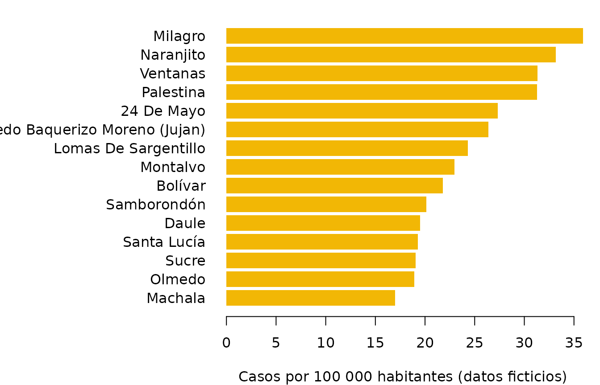

Los sistemas de información en salud guardan cada caso como un recurso FHIR; para vigilancia epidemiológica hace falta otra cosa: cuántos casos hay por territorio y cuántos son en relación con la población. Esta viñeta va de recursos FHIR a tasas por 100 000 habitantes por cantón, uniendo las vistas de fhirviews con la población oficial del INEC que trae el paquete pobecu.
Los datos son ficticios: 755 casos simulados de dengue en 2025 en El Oro, Guayas, Los Ríos y Manabí, generados a partir de la población de cada cantón con un riesgo que varía al azar. No describen la situación real.
1. Los recursos
Cada caso es un Patient y un Condition. La
dirección del paciente lleva el cantón y la provincia en
district y state, y el código DPA del cantón
en una extensión (un ejemplo ilustrativo; un sistema real usaría la de
su guía de implementación):
dengue <- fhir_recursos(system.file("extdata", "dengue_2025.ndjson.gz",
package = "fhirviews"))
dengue
#> <fhir_recursos> 1510 recursos
#> Condition: 755
#> Patient: 755
str(dengue[[1]]$address, max.level = 3)
#> List of 1
#> $ :List of 5
#> ..$ use : chr "home"
#> ..$ district : chr "Machala"
#> ..$ state : chr "El Oro"
#> ..$ country : chr "EC"
#> ..$ extension:List of 1
#> .. ..$ :List of 2Con un servidor, los mismos recursos se obtendrían con algo como
fhir_buscar(con, "Condition", code = "http://snomed.info/sct|38362002", "onset-date" = c("ge2025-01-01", "lt2026-01-01"), "_include" = "Condition:subject").
2. Las vistas
Una vista de pacientes, con el código DPA del cantón:
v_paciente <- vista_leer(r"-({
"name": "paciente",
"resource": "Patient",
"constant": [{"name": "dpa",
"valueUri": "https://f-slg.github.io/fhirviews/StructureDefinition/codigo-dpa"}],
"select": [{"column": [
{"name": "id", "path": "getResourceKey()"},
{"name": "sexo", "path": "gender"},
{"name": "nacimiento", "path": "birthDate", "type": "date"},
{"name": "dpa_canton", "path": "address.where(use = 'home').extension(%dpa).value.first()"},
{"name": "canton", "path": "address.where(use = 'home').district.first()"}
]}]
})-")
pacientes <- vista_ejecutar(dengue, v_paciente)
head(pacientes)
#> id sexo nacimiento dpa_canton canton
#> 1 den-p0001 male 1993-02-08 0701 Machala
#> 2 den-p0002 male 2016-04-28 0701 Machala
#> 3 den-p0003 male 1982-01-27 0701 Machala
#> 4 den-p0004 male 2003-12-08 0701 Machala
#> 5 den-p0005 female 2012-12-12 0701 Machala
#> 6 den-p0006 male 2006-05-13 0701 MachalaY una de diagnósticos, solo los confirmados (los descartados tienen
verificationStatus = refuted):
v_dengue <- vista_leer(r"-({
"name": "dengue",
"resource": "Condition",
"where": [{"path": "verificationStatus.coding.where(code = 'confirmed').exists()"}],
"select": [{"column": [
{"name": "paciente", "path": "subject.getReferenceKey(Patient)"},
{"name": "inicio", "path": "onset.ofType(dateTime)", "type": "date"},
{"name": "grave", "path": "code.coding.where(system = 'http://hl7.org/fhir/sid/icd-10').code = 'A91'",
"type": "boolean"}
]}]
})-")
casos <- vista_ejecutar(dengue, v_dengue)
nrow(casos)
#> [1] 6613. De casos a tasas
Se unen las dos vistas y se cuentan los casos por cantón:
casos <- merge(casos, pacientes, by.x = "paciente", by.y = "id")
por_canton <- aggregate(paciente ~ dpa_canton + canton, data = casos,
FUN = length)
names(por_canton)[3] <- "casos"
por_canton$anio <- 2025pob_tasa() de pobecu agrega la población del cantón en
2025 (proyección oficial del INEC) y calcula la tasa por 100 000
habitantes:
tasas <- pob_tasa(por_canton, "casos")
tasas <- tasas[order(-tasas$tasa), ]
head(tasas[, c("canton", "casos", "poblacion", "tasa")], 10)
#> canton casos poblacion tasa
#> 30 Milagro 78 217302 35.89475
#> 34 Naranjito 16 48219 33.18194
#> 63 Ventanas 25 79831 31.31616
#> 39 Palestina 6 19171 31.29727
#> 1 24 De Mayo 9 32936 27.32572
#> 2 Alfredo Baquerizo Moreno (Jujan) 7 26554 26.36138
#> 27 Lomas De Sargentillo 6 24674 24.31709
#> 31 Montalvo 7 30483 22.96362
#> 9 Bolívar 10 45910 21.78175
#> 52 Samborondón 22 109253 20.13675
top <- utils::head(tasas, 15)
op <- par(mar = c(4, 13, 1, 1))
barplot(rev(top$tasa), names.arg = rev(top$canton), horiz = TRUE, las = 1,
col = "#F2B705", border = NA,
xlab = "Casos por 100 000 habitantes (datos ficticios)")
par(op)4. Por provincia y sexo
pobecu también da la población por sexo. Se recodifica el sexo de
FHIR (female/male) al de pobecu
(mujer/hombre) y se agrega la provincia (los
dos primeros dígitos del código DPA del cantón):
casos$dpa_provin <- substr(casos$dpa_canton, 1, 2)
casos$sexo <- c(female = "mujer", male = "hombre")[casos$sexo]
por_sexo <- aggregate(paciente ~ dpa_provin + sexo, data = casos, FUN = length)
names(por_sexo)[3] <- "casos"
por_sexo$anio <- 2025
tasas_sexo <- pob_tasa(por_sexo, "casos", nivel = "provincia", sexo = TRUE)
tasas_sexo$tasa <- round(tasas_sexo$tasa, 1)
tasas_sexo[order(tasas_sexo$dpa_provin, tasas_sexo$sexo),
c("dpa_provin", "sexo", "casos", "poblacion", "tasa")]
#> dpa_provin sexo casos poblacion tasa
#> 1 07 hombre 39 373536 10.4
#> 5 07 mujer 46 379500 12.1
#> 2 09 hombre 178 2426433 7.3
#> 6 09 mujer 151 2361724 6.4
#> 3 12 hombre 59 489882 12.0
#> 7 12 mujer 52 488605 10.6
#> 4 13 hombre 72 847373 8.5
#> 8 13 mujer 64 867684 7.45. Con SQL
Las mismas vistas se pueden guardar en DuckDB con
vista_duckdb() y contar con SQL; la unión con la población
se hace después en R:
db <- vista_duckdb(dengue, list(v_paciente, v_dengue))
por_mes <- DBI::dbGetQuery(db, "
SELECT strftime(CAST(d.inicio AS DATE), '%m') AS mes,
count(*) AS casos,
sum(CASE WHEN d.grave THEN 1 ELSE 0 END) AS graves
FROM dengue d JOIN paciente p ON d.paciente = p.id
GROUP BY mes ORDER BY mes")
por_mes
#> mes casos graves
#> 1 01 5 0
#> 2 02 73 8
#> 3 03 173 7
#> 4 04 185 15
#> 5 05 132 8
#> 6 06 66 5
#> 7 07 19 5
#> 8 08 6 0
#> 9 09 2 1
DBI::dbDisconnect(db)